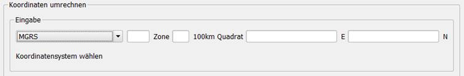

Die Inhalte und Themen in dieser Unterlage wurden mit sehr großer Sorgfalt ausgewählt, erstellt und getestet. Fehlerfreiheit können wir jedoch nicht garantieren. Das Projektteam haftet nicht für Fehler in dieser Dokumentation. Die Beschreibungen stellen ausdrücklich keine zugesicherten Eigenschaften im Rechtssinne dar.
Inhaltsverzeichnis
Auswahl des Koordinatensystems
Transformieren von Koordinaten anhand eines EPSG-Codes
Einführung
Dieses Benutzerhandbuch wurde vom Projektteam mit der gebotenen Sorgfalt und Gründlichkeit für die Anwender der QGIS Applikation in Verbindung mit dem Plugin zur Konvertierung von Koordinaten erstellt. Das Projektteam übernimmt keinerlei Gewähr für die Aktualität, Korrektheit, Vollständigkeit oder Qualität der erfassten Daten.
Das Projektteam übernimmt keine Haftung gegenüber Dritten, die über dieses Handbuch oder Teile davon Kenntnis erhalten. Es können insbesondere von dritten Parteien gegenüber dem Projektteam keine Verpflichtungen abgeleitet werden.
Dieses Handbuch stellt eine technische Hilfestellung dar. Es hat für die Rechtsanwendung keine präjudizierende Wirkung und begründet keinerlei Rechtsansprüche.
Aufruf des Plugins
Das Plugin zur Konvertierung von Koordinaten kann sowohl über den entsprechenden Eintrag im Menü „Erweiterungen“ als auch über das Icon in der Menüleiste durch Klicken der linken Maustaste aufgerufen werden.
Auswahl des Koordinatensystems
Über die Auswahlbox im „Eingabe“-Bereich lässt sich das Koordinatensystem auswählen, aus welchem die im Anschluss eingegebenen Koordinaten konvertiert werden sollen.
Nach erfolgter Auswahl werden die für die Eingabe notwendigen Felder angezeigt.
Eingabefelder für das Koordinatensystem WGS84 „Dezimalgrad“
Eingabefelder für das Koordinatensystem WGS84 „Grad, Kommaminuten“
Eingabefelder für das Koordinatensystem WGS84 „Grad, Minuten, Sekunden“
Eingabefelder für das Koordinatensystem „Universal Transverse Mercator System“

Eingabefelder für das Koordinatensystem „Military Grid Reference System“
Umrechnen von Koordinaten
Parallel zur Eingabe werden die Koordinaten, sofern sie gültig sind, umgerechnet. Im Falle der Eingabe von ungültigen Werten oder Zeichen erscheint eine Fehlermeldung.
Transformieren von Koordinaten anhand eines EPSG-Codes
Im Bereich „anhand EPSG-Code konvertieren“ lassen sich die Koordinaten eines Punktes anhand zweier EPSG-Codes transformieren.

Im ersten Schritt ist der EPSG-Code von dem transformiert werden soll auszuwählen. Dazu klicken sie mit der linken Maustaste im Bereich „von“ auf den Button „EPSG auswählen“. Im folgenden Dialogfenster wählen Sie den EPSG-Code aus. Optional können Sie auch über die Filterfunktion gezielt nach einer Bezeichnung oder einer AutoritätsID filtern. Ihre Auswahl bestätigen mittels Klick auf „OK“.
Ihre getätigte Auswahl wird übernommen und entsprechend angezeigt.

Als nächstes gilt es den EPSG-Code auszuwählen nach dem transformiert werden soll. Dazu klicken sie mit der linken Maustaste im Bereich „nach“ auf den Button „EPSG auswählen“. Im folgenden Dialogfenster wählen Sie den EPSG-Code aus. Optional können Sie auch über die Filterfunktion gezielt nach einer Bezeichnung oder einer AutoritätsID filtern. Ihre Auswahl bestätigen mittels Klick auf „OK“.
Ihre getätigte Auswahl wird übernommen und entsprechend angezeigt.
Nach erfolgter Eingabe der beiden gültigen Koordinatenwerte im Bereich „von“ und dem Klicken auf den Pfeil nach rechts Button („- - >“) werden die eingegebenen Koordinaten transformiert und angezeigt.

Sollten die eingegebenen Koordinatenwerte nicht transformiert werden können, so erscheint in Ausgabefeldern der Eintrag „undefiniert“ in roter Farbe gehalten.
Ändern der Anzeigesprache
Mittels klicken der linken Maustaste lässt sie die Anzeigesprache zwischen Deutsch und Englisch umschalten. Dies umfasst sämtliche Beschriftungen und Fehlermeldungen.
Fehlermeldungen
„ungültiges Symbol“
"invalid Symbol“
Ein ungültiges Symbol wurde eingeben. Das ungültige Symbol wird als Teil der Fehlermeldung ausgegeben.
„Wer muss ganzzahlig sein“
"Value hast to be an integer“
Der eingegeben Wert ist nicht ganzzahlig.
„Eingabe zu lange“
"input too long“
Der eingegebene Wert ist zu lange.
„Zone muss mit einer Zahl beginnen“
"zone has to start with a number“
Eine UTM oder MGRS Zone muss zwingend mit einer Zahl beginnen.
„Zone muss aus zwei Ziffern bestehen“
"first two numbers of zone has to be numbers”
Eine UTM oder MGRS Zone muss zwingend aus zwei Ziffern bestehen.
„Zone muss aus zwei Ziffern und einem Buchstaben bestehen“
"zone has to contain two numbers and a letter"
Eine UTM oder MGRS Zone muss zwingend aus zwei Ziffern bestehen und einem Buchstaben.
„Gitterquadrat muss mit Buchstaben beginnen“
"square has to start with a letter"
Ein 100 km Gitterquadrat einer MGRS Koordinate muss zwingend mit einem Buchstaben beginnen.
„Gitterquadrat muss aus zwei Buchstaben bestehen“
"square has to be two letters"
Ein 100 km Gitterquadrat einer MGRS Koordinate muss zwingend aus zwei Buchstaben bestehen.
„Eingabe noch nicht vollzählig“
"input not completed"
Die Eingabe ist noch nicht vollzählig.
„Ungültige MGRS-Zone“
"Invalid MGRS zone“
Die eingegebene MGRS Zone ist nicht gültig.
„Ungültige Zone-Gitterquadrat-Kombination“
"Invalid grid zone designation“
Das eingegebene 100 km Gitterquadrat passt nicht zur eingegebenen Zone.
„Wert für Längengrad außerhalb des Wertebereichs“
"Degree value of longitude out of range (-180...+180)"
Der eingegebene Längengrad ist außerhalb der gültigen Wertebereichs.
„Wert für Breitengrad außerhalb des Wertebereichs“
"Degree value of latitude out of range (-90...+90)"
Der eingegebene Breitengrad ist außerhalb der gültigen Wertebereichs.
„Gradminuten außerhalb des Wertebereichs“
"Minutes value out of range (0...59)"
Die eingegebenen Gradminuten sind außerhalb der gültigen Wertebereichs.
„Gradsekunden außerhalb des Wertebereichs“
"Seconds value out of range (0...59)"
Die eingegebenen Gradsekunden sind außerhalb der gültigen Wertebereichs.
„Zone außerhalb des Wertebereichs“
"zone out of range (0...60)"
Die eingegebene Zone ist außerhalb der gültigen Wertebereichs.
„Ostwert außerhalb des Wertebereichs“
"easting out of range"
Der eingegebene Ostwert ist außerhalb der gültigen Wertebereichs.
„Nordwert außerhalb des Wertebereichs“
"northing out of range"
Der eingegebene Nordwert ist außerhalb der gültigen Wertebereichs.
„Ungültiger Buchstabe für Ostwert eines 100km Quadrates“
"Invalid easting letter for 100x100km grid square”
Der eingegebene Buchstabe ist als Teil des 100 km Gitterquadrats nicht gültig.
„Ungültiger Buchstabe für Nordwert eines 100km Quadrates“
"Invalid northing letter for 100x100km grid square”
Der eingegebene Buchstabe ist als Teil des 100 km Gitterquadrats nicht gültig.
„Ein Fehler ist aufgetreten. Bitte eingegebene Daten prüfen“
"An error occurred - please check entered values"
Die eingegebenen Koordinatenwerte sind nicht gültig.
„EPSG-Code noch nicht festgelegt.“
"EPSG code not defined yet"
Es wurde noch kein EPSG-Code für die Transformation festgelegt.
„Kein X-Wert eingegeben“
"no value X entered"
Es wurde noch kein X-Wert für die Transformation eingegeben.
„Kein Y-Wert eingegeben“
"no value Y entered"
Es wurde noch kein Y-Wert für die Transformation eingegeben.